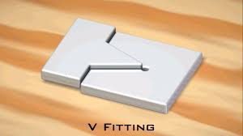

V-FITTING
Procedure of making V-fitting

- The given mild steel flat piece is checked for given dimensions.
- One edge of given is filed with rough and smooth files and checked with a try square for straightness.
- An adjacent edge is also filed such that it is square to the first edge and checked with a try square.
- Wet chalk is applied on one side of the flat and dried for marking.
- Lines are marked according to the given figure, using an odd leg caliper and steel rule.
- Using the dot punch, punches are made along the marked lines.
- The excess material is removed from the remaining two edges with a try square level up to half of the man dots.
- Finally, burrs are removed by filing on the surface of the fitted job.
PRECAUTIONS:
- The perpendicular of face ends edges is checked perfectly by using a try square.
- Finishing is done using only smooth files.
- Marking is done without parallax error.